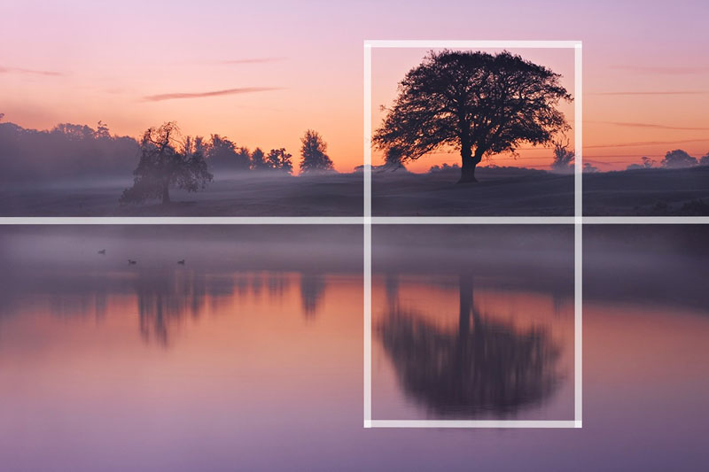

Composition | Center and Symmetry
We are surrounded by symmetry and patterns, both natural and man-made. They can make for very eye-catching compositions, particularly in situations where they are not expected. Another great way to use them is to break the symmetry or pattern in some way, introducing tension and a focal point to the scene.

Symmetrical scenes are perfect for a centred composition. They look really well in square frames too.
Scenes containing reflections are also a great opportunity to use symmetry in your composition. In this photo, I’ve actually used a mix of the rule of thirds and symmetry to compose the scene. The tree is positioned off centre to the right of the frame but the perfectly still water of the lake provides the symmetry. You can often combine several composition guidelines in a single photograph.